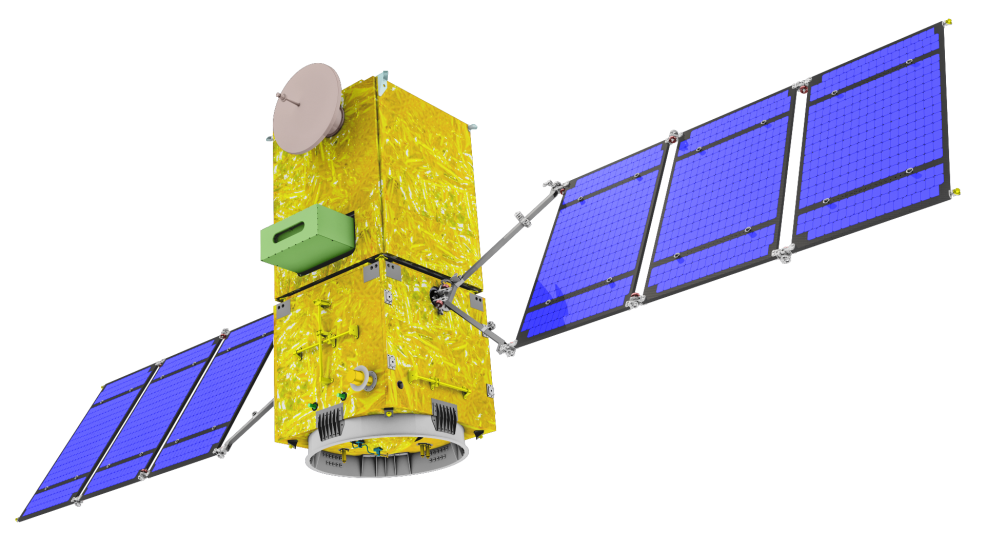

O espaço como ponte de emergência
Rede mesh satelital que conecta regiões isoladas quando a infraestrutura terrestre falha.

01
Problema
Quando o desastre chega, o sinal vai embora.
-
Em enchentes, deslizamentos e incêndios, as redes terrestres colapsam. Regiões remotas ficam isoladas quando mais precisam de comunicação.
-
Centenas de municípios brasileiros não têm cobertura de internet. A falta de dados em tempo real custa vidas e atrasa respostas de emergência.
02
Tecnologia
Três camadas que não dependem de torres.
Satélite LEO
Starlink e OneWeb em órbita baixa com cobertura global e latência de 20–40ms.
Rede Mesh
Nós IoT se comunicam entre si. Se um cair, os dados são roteados pelo nó vizinho.
Arduino + Sensores
Hardware acessível com sensores de temperatura, umidade, nível de água e GPS.
Python + Trigonometria
Algoritmo calcula o ângulo de elevação para escolher o nó com melhor visada satelital.